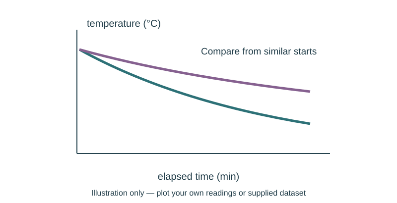

Job 25 · Improve a thermal design
A revised wrap or envelope model with a controlled retest and material budget.
110 minutes • Tape measure + pocket notebook • Name: __________________ Date: __________
Materials: Previous thermal setup and data; paper and tape; same measuring equipment or supplied comparison.
Equipment alternative: Use supplied original/revised drops 8°C and 6°C at the same stated conditions; analyze the comparison and propose a real retest. Do not record it as student measurement.

Brief · 12 min
- Your first test suggests a useful revision. What single feature can you change while keeping the comparison interpretable?
- Set up a dated notebook spread: sketch and readings on the left; calculation, decision, test, and revision on the right. Mark small sketches NTS unless drawn to a chosen scale.
- Work in pairs and rotate roles. Each student keeps an individual notebook and performs a tool action and a calculation.
Measure · 18 min
- Review the previous temperature graph and identify a specific weakness or uncertainty.
- Choose one change: wrap layers, coverage, or lid condition, with teacher approval.
- Record original materials, new materials, and the hypothesis before testing.
Plan · 20 min
- Set a fixed paper budget and calculate used area for both versions.
- Draw the thermal paths through the sides, lid, and base; mark which one you changed.
- Plan the same volume, initial temperature, location, and measurement interval.
Worked example
Original temperature drop is 8°C; revised drop is 6°C over the same interval. Find reduction and percent reduction relative to original drop. Reduction = original−revised; percent = reduction/original×100. 2°C reduction; 25% smaller drop. This is not a 25% increase in R-value.
Make · 28 min
- Build the revision and run the comparison or analyze the supplied case.
- Calculate and graph change, labeling evidence source.
- Revise your claim if variation or uncontrolled conditions prevent a clear conclusion.
Test · 20 min
- A single intended variable is identified.
- Cost/area and temperature evidence support the recommendation.
- A weak or inconclusive result is reported honestly.
Explain · 12 min
- Complete the individual exit below before discussing answers.
- Add the test result, revision, and notebook page reference to your response. Use the notebook as evidence rather than retyping every page.
- Save the three selected responses and submit the lesson for teacher review. Show your physical work and notebook to the teacher. Clean up and return shared supplies.
Individual exit
A supplied original drop is 5°C and revised drop is 4°C. Find percent reduction. Why is “20% smaller temperature drop” more defensible than “20% better insulation rating”?